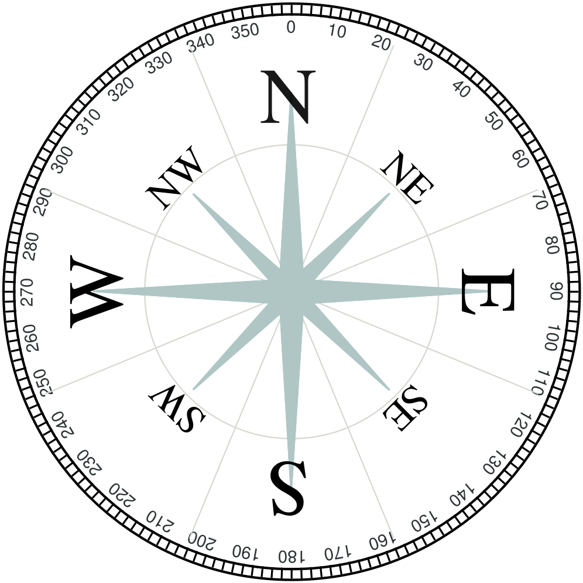
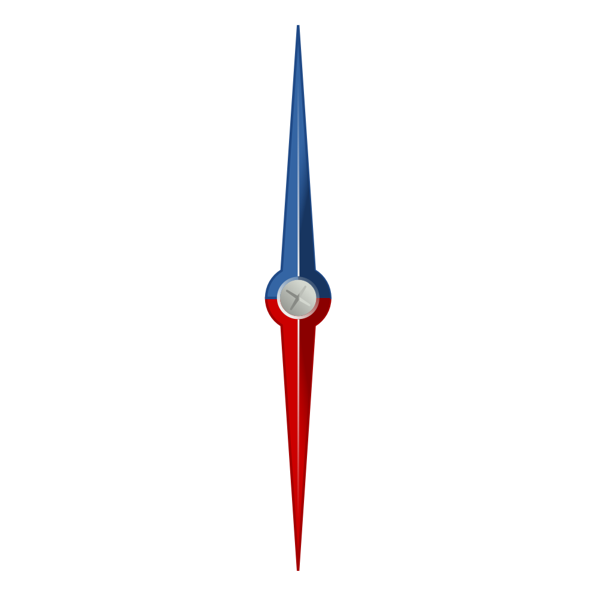

<ion-header>
    <ion-toolbar>
      <ion-buttons slot="start">
        <ion-back-button></ion-back-button>
      </ion-buttons>
      <ion-title>
        Qiblat
      </ion-title>
    </ion-toolbar>
  </ion-header>
  

  <ion-content >
     <div class="ion-text-center">
        <h2>
          {{cardinalPosition}} {{compassDegree}}&deg;
        </h2>
     </div> 

      
        

        {{latCoords}} - {{lngCoords}}
      </ion-content>
